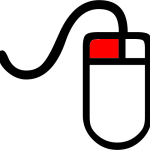

Choisissez votre mode d’exploration :
Clavier/Souris
Smartphone/Tablette
Manette Xbox
Navigation avec Clavier/Souris :
Instructions
|  |
Pour observer votre environnement, maintenez le bouton gauche de
la souris enfoncé tout en déplaçant le curseur pour orienter
votre vue.
|
|
Pour vous déplacer, utilisez les touches directionnelles du
clavier ou les touches ZQSD, comme dans un jeu vidéo de type
FPS.
|
| Flèches |
Actions |
| ↑ |
Avancer |
| ↓ |
Reculer |
| ← |
Déplacer vers la gauche |
| → |
Déplacer vers la droite |
| Touches |
Actions |
| Z |
Avancer |
| S |
Reculer |
| Q |
Déplacer vers la gauche |
| D |
Déplacer vers la droite |
|
Utiliser à la fois les touches de direction et le bouton gauche
de la souris pour vous déplacer librement.
|
|
Les icones suivantes sont présentes en bas à droite de l'écran :
|
| Icones |
Actions |
|
Changer de caméra ( touche raccourci C ) |
|
Plein écran ( touche raccourci X ) |
|
Voler ( touche raccourci F ) |
|
Marcher ( touche raccourci M ) |
Prêt pour la découverte? Voici la liste des
mondes à explorer
Navigation sur Smartphone/Tablette :
Penser à utiliser le smartphone/tablette en mode paysage pour un
meilleur confort de navigation.
Déplacez votre doigt n’importe où sur l’écran pour vous déplacer. Si
vous souhaitez une navigation avancée utilisez les deux cercles en bas
de votre écran :
|
Pour observer autour de soi, appuyer sur le cercle oeil et
déplacer le pouce droit vers le haut/bas/gauche/droite
|
|
plein écran ( raccourci X ) |
Navigation avec Manette Xbox :